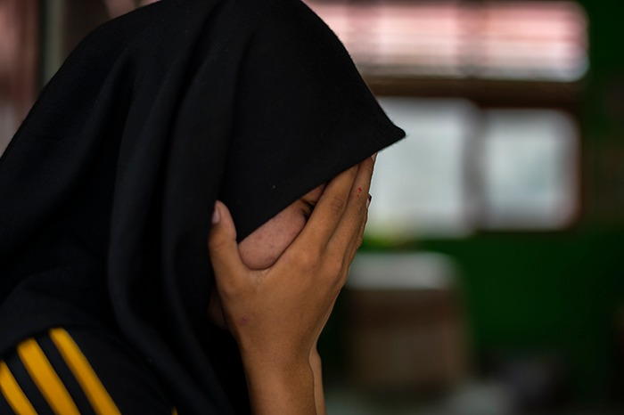
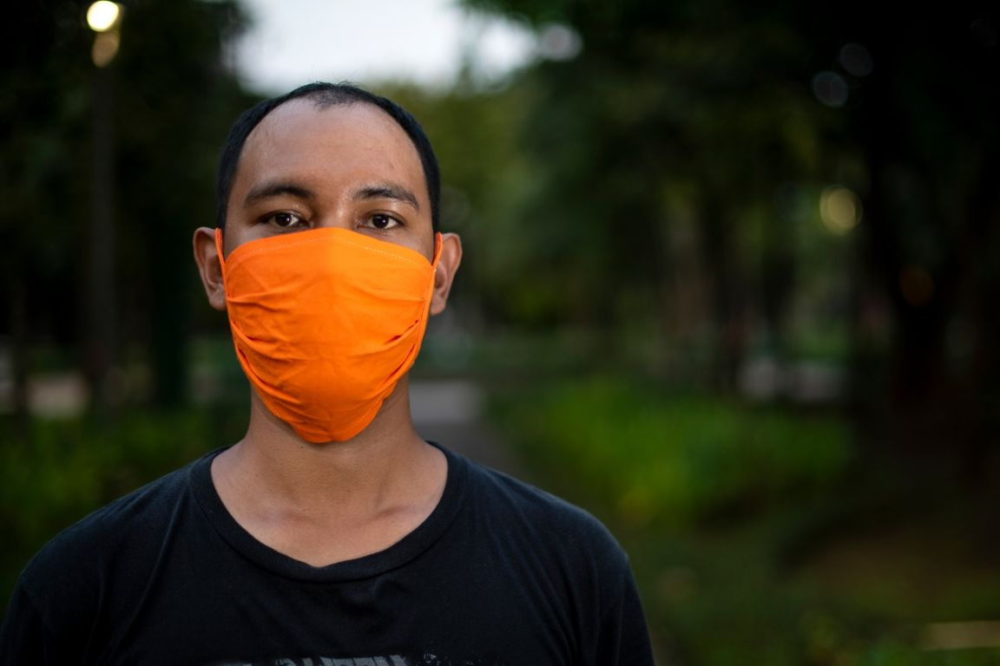

Ketahui: Stigma, efek samping COVID-19

Bila Anda atau orang tercinta tengah berjuang melawan virus corona (COVID-19), ada satu efek samping
yang juga akan dihadapi, yaitu stigma.
Stigma membuat orang merasa terkucilkan atau bahkan diabaikan. Mereka bisa tertekan, sakit dan marah
saat mengetahui teman-teman dan lingkungannya mengabaikan atau bahkan memboikot.
Tenaga kesehatan bekerja keras setiap hari merawat pasien dan bila terkena virus, mereka harus
berjuang untuk sembuh. Stigma menambah beban di pundak mereka.
Stigma mengganggu upaya menghentikan wabah. Orang yang merasa khawatir dijauhi atau diperlakukan
buruk akan menghindari tes atau pengobatan. Tapi tindakan mereka justru akan menyebarkan virus dan
menghalangi usaha untuk mengontrol wabah.
Ketahui: Cara Mengasuh anak-anak Selama Wabah

Kesibukan bekerja terkadang membuat hubungan anak-orang tua menjauh. Berada selalu di rumah selama
wabah COVID-19 sesungguhnya memberi kesempatan bagus bagi orang tua melakukan kegiatan bersama anak
dan menguatkan kembali hubungan.
Bagaimana menjelaskan COVID-19 pada anak kecil
Anak lebih pintar dari yang kita duga. Anak kecil bahkan bisa mencuri dengar pembicaraan orang
dewasa tentang virus corona (COVID-19). Anak-anak bisa merasa takut atau bingung dengan apa yang
akan dialami. Tanpa sekolah, tidak bisa bertemu teman atau kegiatan lain yang biasa dilakukan, ini
adalah waktu sulit bagi anak, meski mereka tidak menyampaikan perasaannya.
Anak mungkin mengalami kesulitan memahami apa yang mereka lihat di media online atau TV. Dengarkan
kekhawatiran mereka dan berdiskusi secara terbuka agar dapat membantu anak memahami dan menyesuaikan
diri..
Ketahui: Ada Info Masker Kain
Kincir Angin

Ketahui: Cara tepat menggunakan masker
Masker harus digunakan tenaga kesehatan, orang sakit, orang yang merawat orang sakit dan orang
sehat yang keluar rumah karena kebutuhan penting.
Tenaga kesehatan, orang sakit dan orang yang merawat orang sakit menggunakan masker medis. Orang
sehat cukup menggunakan masker kain.
Berikut panduan cara menggunakan masker yang tepat.
- Sebelum memasang masker, cuci tangan pakai sabun dan air mengalir (minimal 20 detik) atau
bila tidak tersedia, gunakan cairan pembersih tangan (minimal alkohol 60%).
- Pasang masker menutupi hidung, mulut sampai dagu. Pastikan tidak ada sela antara wajah dan
masker.
- Jangan buka tutup masker. Jangan menyentuh masker. Bila tersentuh, cuci tangan pakai sabun
dan air mengalir minimal 20 detik atau bila tidak ada, gunakan cairan pembersih tangan
(minimal alkohol 60%)
- Ganti masker yang basah atau lembab dengan masker baru. Masker medis hanya boleh digunakan
satu kali saja. Masker kain dapat digunakan berulang kali.
- Untuk membuka masker: lepaskan dari belakang. Jangan sentuh bagian depan masker; Untuk
masker 1x pakai, buang segera di tempat sampah tertutup atau kantong plastik. Untuk masker
kain, segera cuci dengan deterjen. Untuk memasang masker baru, ikuti poin pertama.